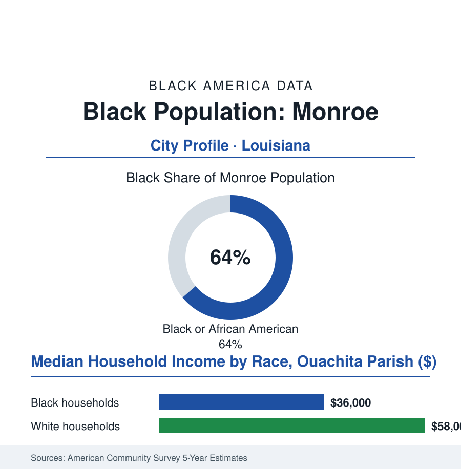

Black Cities
Black Monroe: 31,000 People, a Majority on the Ouachita
Monroe is a Black-majority city on Louisiana's Ouachita River — a Delta-east town of paper mills, a Grambling corridor, and a civic life run, at last, by the majority itself.

Monroe's Black community numbers roughly 31,000 people — about 64% of the city's 48,000 residents, an outright majority — in the northeast Louisiana river town that faces the Delta across the Ouachita, forty miles from Grambling and a world shaped by cotton's old geography, the paper mill's whistle, and the long arithmetic of a majority learning to govern itself. This article reads Monroe's numbers.
Cotton's River, Paper's Town
The founding economy was the river's: the Ouachita steamboats carrying the Black Belt parishes' cotton down to New Orleans, the town growing as the landing and the counting house for the plantation country behind it — its Black population, enslaved and then nominally free, always the labor and always near the numerical weight it holds today, the post-emancipation record showing the freedpeople's churches and schools rising in a region whose white minority held the land, the credit, and the parish courthouse in the standard proportions. The twentieth century industrialized the pattern without dissolving it: the paper mill on the river (its unionized shifts the Black industrial ladder of the farm file's graduates), the carbon-black plants and the chemical row, the railroad and the highway junctions of a town that was always a crossroads — the Delta's eastern dock. The civil-rights chapters ran through the era's geography (the school fights, the downtown's counters, the ward maps) into the late-century realignment the voting data tell plainly: the majority converting itself, across the last generation, into the government — the Black mayors and councils of the modern record administering a majority-Black city whose budget, schools, and police are the majority's own responsibility and report card, a transition the political data date to the decades when the white population's suburban secession to the parish's edges redrew the city's lines around its majority. The cultural file holds the region's satellite glow: Grambling's university forty minutes west, its band and its football a parish-wide Black institution, Monroe's own gospel and blues lineages in the Delta's eastern register.
The Majority's Balance Sheet
The faith map deserves its own reading in a town like this one: the Black churches of Monroe's neighborhoods are, in the civic data, the shadow government and the welfare state and the historical society in one — their anniversary books carrying the town's most complete Black archive, their fellowship halls hosting the voter-registration drives and the food distributions alike, their pastors on the councils and commissions in numbers the political data treat as structural. In a majority city, the church's civic role does not diminish; it merges, visibly, with the public one.
The modern data describe majority governance operating inside a poor region's constraints, and the file refuses to flinch from either half: the household rows in the parish survey cuts (a Black median in the mid thirty-thousands — the majority's poverty the deepest structural fact in the profile, the mill and warehouse wages of the regional economy capping the whole table), the school system's data carrying the same concentrated need, the health rows of the Delta file's Louisiana page (the chronic-disease belts reaching their eastern shore here), and the infrastructure ledger of a small city (the water system's recent national-headline failures in the neighboring towns standing as the region's cautionary file) — against which the ledger's other side records what majority control actually buys in the civic data: the procurement and hiring shelves opened to the community's own firms, the cultural calendar funded, the historical markers corrected, the police department's leadership drawn from the policed — the governance file's experiment running, as in every majority-Black city of this atlas, under the auditor's eye of a state house whose politics remain the parish map's opposite. The forward data are the region's: the university and the medical school's Monroe programs, the river port's ambitions, the interstate corridor's logistics, the Grambling symbiosis — and a demographic stability the Delta's west-bank towns envy, Monroe's population holding where its sister cities' bleed, the majority rooted in a way the migration data read as the region's anchor.
Reading Monroe's Numbers
Thirty-one thousand people, sixty-four percent, one river town: Monroe is the cities file's majority-rule chapter — the demographic fact and the governing fact finally the same fact, the results audited in public. The census counts the majority. The city it runs — its schools, its water, its budget — publishes the majority's own verdict on itself, one fiscal year at a time.
More in Black Cities
Black Atlanta: Population, Distribution, and Growth of a Black Metropolis
Metro Atlanta holds more than two million Black residents — roughly one in three, second only to New York. The suburban distribution, migration history, and composition of Black Atlanta in the census data.
Black New York: The Largest Black Population in America
The New York metropolitan area holds about 3.4 million Black residents — more than any metro in the nation — and the city itself about two million. The census profile.
Black Washington: The District and the Metro
The Washington metro holds about 1.6 million Black residents, and the District itself — long a majority-Black city — now records a Black share near 41 percent. The census profile.
Source: U.S. Census Bureau, 2020 Census and American Community Survey 5-year estimates; City of Monroe and Ouachita Parish; University of Louisiana Monroe records.